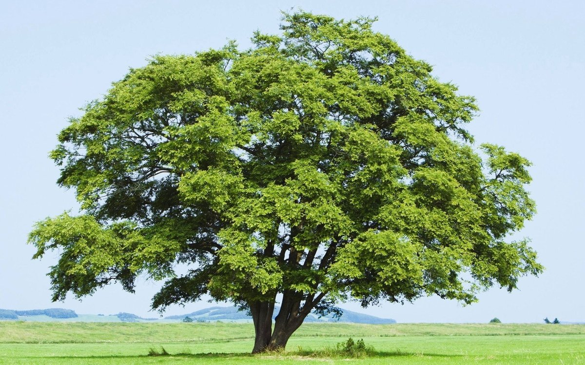

The tree is a perennial plant with a solid trunk and departing from it the branches that form the crown.
Trees are classified into:
Conifers trees usually distinguished by tough evergreen needle-shaped or scaly leaves, called needles, or needles, form cones or juniper berries.
Broadleaf trees have wide and flat leaves, which are much less thick than the length and width, usually falling off once a year.
Deciduous trees have a clear change in deciduous cover: all leaves on the tree lose their green color and fall off, in winter the tree stands without leaves, in spring new leaves grow from the buds.
Evergreen trees don't have a clear change of deciduous cover: foliage is on the tree at any time of the year, and the change of leaves occurs gradually, throughout the life of the tree.
More information you can find on the wikipedia.